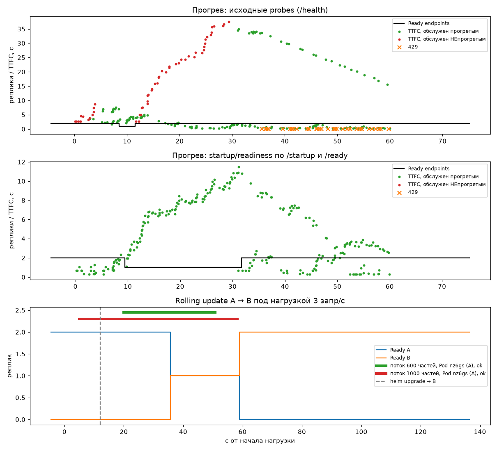
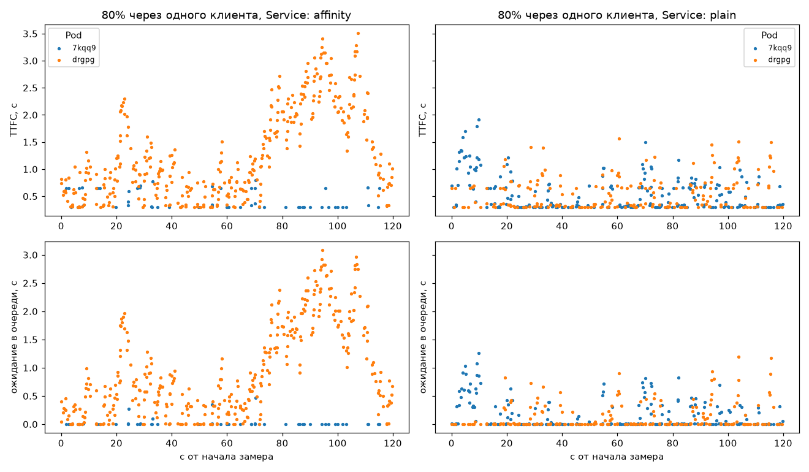
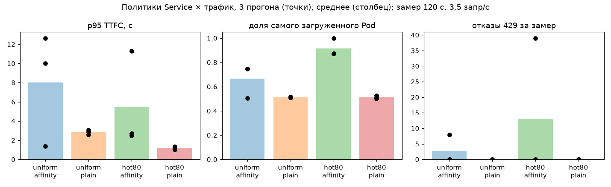
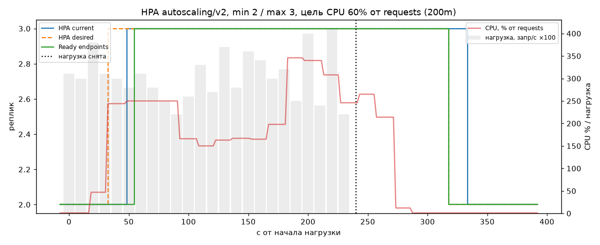

ДЗ 11. Сервис работает, пользователи ждут
MLOPS-26 · сервис ДЗ 8+9+10 в Kubernetes (kind) · основная часть на имитаторе backend_mode=simulated,
короткий опыт с моделью ДЗ 6+7 на GPU — отдельно, в разделе 6.
results/ (requests.csv, 7622 строк,
и JSONL по опытам). Числа имитатора описывают модель нагрузки имитатора, а не скорость языковой модели.1. Стенд
- Окружение
- Windows 11, Docker Desktop 29.9.2 на WSL2: 16 vCPU, 15,5 ГиБ. kind v0.33.0, узел
kindest/node:v1.37.0(containerd 2.3.4), kubectl v1.36.1, Helm v4.3.2. Свободное место до начала: 69 ГБ. - Сервис
- Helm-чарт
chart/sim-api: Deployment с 2 репликами, ConfigMap, два Service (обычный и сClientIP), HPA по флагу. В values параметризованы образ, версия модели и её SHA-256, прогрев, число реплик, режим probes и параметры backend. Образsim-api:0.1.0собран наpython:3.12.12-slimс закреплёнными зависимостями: 202 МБ, в узле 49 МБ. - Ресурсы Pod
- requests 200m CPU и 128 МиБ, limits 1 CPU и 256 МиБ. Стратегия
maxSurge 1, maxUnavailable 0,terminationGracePeriodSeconds 60, preStop/drain5 с, graceful shutdown uvicorn 45 с. - Хранение метрик
- Prometheus v3.1.0: хранение 6 ч, не более 800 МБ, emptyDir с лимитом 1 ГиБ. Grafana 11.4.0 без постоянного тома.
Сбор с каждого Pod через
kubernetes_sd_configs: role pod, интервал 5 с; добавлены kube-state-metrics v2.13.0 и metrics-server v0.7.2. - Размер стенда
- Узел kind: образ около 1 ГБ и том около 2,3 ГБ; образ сервиса 0,2 ГБ. Удаление:
kind delete cluster --name hw11иdocker image rm sim-api:0.1.0 kindest/node:v1.37.0. Окружение.venvдля GPU-опыта (несколько ГБ) удаляется отдельно. - Артефакт
- Файлы
/models/model-A.jsonиmodel-B.jsonвшиты в образ, неизменяемый по digest. Ожидаемый SHA-256 передаётся из values. При несовпадении прогрев не завершается,/startupне даёт 200, и Pod не попадает в Ready. После замены Pod та же версия и тот же хеш подтверждены проверкой 3. - Идентификация
- Каждый ответ и строка журнала несут
request_id(из заголовка клиента), имя Pod, версию, хеш иbackend_mode. История диалога передаётся в запросе, Pod её не хранит. Продолжение диалога после замены Pod проверено проверкой 3.
Backend и генератор
Имитатор: прогрев 20 с; не больше 2 одновременных вычислений на Pod; очередь до 32, сверх неё 429. Ответ выдаётся частями NDJSON, пауза между частями 0,05 с. Префиксный кеш — LRU на 16 префиксов в каждом Pod. Стоимость prefill: hit 0,25 с, miss 0,6 с вычислений на CPU. Непрогретый Pod добавляет 2 с. Ключ кеша — SHA-256 от prefix и истории.
Генератор: открытая модель, запросы уходят по расписанию и не ждут ответа. Каждый запрос — новое TCP-соединение (Connection: close).
Время на клиенте измеряется через time.monotonic, сверка запланированного и фактического момента отправки — через time.time.
Сохраняются отправка, первая часть, завершение, статус, Pod, версия, число частей, очередь и попытка.
Повтор — отдельная строка с тем же logical_id.
2. Опыт A. Прогрев, обновление и откат
Прогрев: дефект и исправление
Гипотеза. Если startup и readiness смотрят на /health, Pod объявляется готовым, как только поднялся HTTP.
Тогда Service отправляет рабочий трафик в непрогретый backend.
Воспроизведение. Одно и то же расписание: 4 запроса/с, 60 с, один клиентский Pod через Service sim.
На 8-й секунде удаляется один Pod. Отличается только probes.fixed.
| Опыт | Запланировано | Отправлено | Завершено | Отклонено 429 | Оборвано | Просрочено | 5xx/нет соединения | Доля отказов | n успешных | TTFC p50, с | TTFC p95, с | Обслужено непрогретым |
|---|---|---|---|---|---|---|---|---|---|---|---|---|
| исходные probes (/health) | 247 | 247 | 211 | 36 | 0 | 0 | 0 | 14,6% | 211 | 2,85 | 33,82 | 52 |
| исправленные probes | 247 | 247 | 247 | 0 | 0 | 0 | 0 | 0,0% | 247 | 3,37 | 9,76 | 0 |
Данные до. Новый Pod стал Ready через 2,0 с после появления,
хотя прогрев длится 20 с. Непрогретые Pod обслужили 52 запросов с 0,2 по 29,4 с
(TTFC p50 этих запросов — 17,0 с), и 36 запросов получили 429.
Непрогретые запросы есть уже с нулевой секунды: helm upgrade --wait при исходных probes счёл свежие Pod готовыми.
Значит, дефект ломает и сам выпуск, а не только замену Pod.
Причина. /health отвечает о жизни процесса, а не о готовности модели; все три probes делили этот один маршрут.
Изменение. У каждой проверки свой маршрут:
startupProbe → /startup (200 только после прогрева, failureThreshold 25 × 2 с = 50 с покрывают 20 с прогрева с запасом);
readinessProbe → /ready (прогрет и не в drain); livenessProbe → /live (event loop отвечает, от прогрева не зависит).
Пока startup не прошёл, liveness и readiness не выполняются.
Повтор. Новый Pod стал Ready через 22,3 с, непрогретых ответов 0, отказов 0.
Линия Ready в EndpointSlice — на графике 1.
Собственная проверка 1 на исходных probes падает (f'{len(cold)} запросов обслужены непрогретым Pod, results/checks/red_defect_probes.log)
и проходит на исправленных (results/checks/green_all.log).
Ограничения. Пока второй Pod прогревался, один Pod держал весь поток, и TTFC p95 вырос до 9,8 с.
Ёмкость при замене Pod — отдельный вопрос: его решают запас реплик или maxSurge, а не probes.
Rolling update A → B под длинными потоками
Нагрузка 3 запроса/с, 120 с. На 5-й и 20-й секунде запущены два длинных потока: 1000 и 600 частей (50 и 30 с).
На 12-й секунде запущен helm upgrade на B.
| Опыт | Запланировано | Отправлено | Завершено | Отклонено 429 | Оборвано | Просрочено | 5xx/нет соединения | Доля отказов | n успешных | TTFC p50, с | TTFC p95, с | Версии в ответах |
|---|---|---|---|---|---|---|---|---|---|---|---|---|
| rollout A→B | 393 | 393 | 393 | 0 | 0 | 0 | 0 | 0,0% | 393 | 0,65 | 29,48 | A: 160, B: 233 |
| Отправлен, с | Завершён, с | Частей | Pod | Версия | Итог |
|---|---|---|---|---|---|
| 20,0 | 50,8 | 600 | sim-546fb9d66f-nz6gs | A | ok |
| 5,0 | 58,3 | 1000 | sim-546fb9d66f-nz6gs | A | ok |
Ни одного 5xx и ни одного оборванного потока. Число Ready не опускалось ниже 2: B1 стал Ready на 35,7 с, после чего ушёл первый A;
B2 стал Ready на 59,0 с. Оба длинных потока попали на один старый Pod. Журнал этого Pod на остановке:
drain running=2 waiting=25. Он доработал все 27 запросов и вышел через 27,7 с, в пределах 45 с graceful shutdown и 60 с grace period.
Ограничение. Длинные потоки занимали оба слота вычисления старого Pod, и короткие запросы ждали за ними в очереди. Поэтому TTFC p95 всего прогона — 29,5 с. Без отказов, но это ожидание. Лечится отдельным лимитом на длинные ответы или выделенным пулом.
Неготовая B и откат
Выпущена B с неверным SHA-256. Её Pod sim-ccbb69985-b6866 не прошёл startup и перезапускался; в Ready EndpointSlice он не попал
ни разу (записей: 0). Rollout остановился, рабочие B продолжали обслуживать трафик.
Версии в ответах за первые 60 с: {'B': 129}. Затем выполнен helm rollback к ревизии с A и исправными probes.
Последние 20 ответов прогона: {'A': 20}. Всего 308 из 308 успешны, ошибок 0.
Версия после отката подтверждена и ответами, и /info каждого Pod в проверке 2.
Принудительное завершение
kubectl delete pod --grace-period=0 --force на 15-й секунде, нагрузка 3 запроса/с и два потока по 400 частей.
У клиента включено до 2 повторов при обрыве или ошибке соединения.
| Опыт | Запланировано | Отправлено | Завершено | Отклонено 429 | Оборвано | Просрочено | 5xx/нет соединения | Доля отказов | n успешных | TTFC p50, с | TTFC p95, с | Попыток |
|---|---|---|---|---|---|---|---|---|---|---|---|---|
| forced kill | 245 | 245 | 234 | 11 | 1 | 0 | 0 | 4,9% | 234 | 3,20 | 17,05 | 246 |
Оборван 1 поток: он успел отдать 216 частей из 400. Повтор выполнен с нуля отдельной попыткой и завершился успешно (повторено логических запросов: 1, успешных повторов: 1). Отказ обнаружен быстро: Pod удалён на 15,0 с, Endpoint исчез из Ready на 15,7 с (наблюдатель опрашивает раз в секунду). Обслуживание полностью восстановилось на 37,8 с, когда прогрелась замена. Пока работал один Pod, 11 запросов получили 429 с 32,9 по 44,6 с. Ошибки 5xx и потерянные соединения: 0.
3. Опыт B. Привязка к Pod и горячая реплика
Гипотеза. Привязка ClientIP сохраняет локальность префиксного кеша, но при неравномерных клиентах создаёт горячую реплику:
она ждёт, а у другой остаётся свободная ёмкость.
Настройки сети. kube-proxy в режиме iptables. Service sim: ClusterIP 10.96.111.5, без привязки.
sim-affinity: ClusterIP 10.96.17.221, ClientIP, timeout 10 800 с.
Трафик идёт Pod→ClusterIP внутри узла без SNAT, поэтому механизм привязки видит IP клиентского Pod; сервер записывает тот же client_ip.
Keep-alive выключен: каждое соединение выбирает Pod заново, а при ClientIP — по записи привязки.
Сценарий. 4 клиентских Pod с разными IP. Пуассоновский поток 3,5 запроса/с, 10 сессий на клиента, prefix 2000 символов, 6 частей ответа. Расписание общее для обеих политик (seed 2026). Трафик двух видов: равномерный и 80% через клиента 0. Перед каждым прогоном клиентские Pod пересоздаются (новые IP, чистая привязка) и кеш сбрасывается. 10 с прогрева не учитываются, замер длится 120 с. Каждая комбинация выполнена 3 раза, всего 12 прогонов. Запланированное и фактическое время отправки хранятся раздельно; максимальное отставание генератора — 0,9 мс.
| Трафик | Service | Прогон | Запланировано | Завершено | 429 | Запросы по Pod | Доля самого загруженного Pod | Попадания в кеш | TTFC p50, с | TTFC p95, с | Макс. отставание отправки, с |
|---|---|---|---|---|---|---|---|---|---|---|---|
| hot80 | affinity | 1 | 419 | 419 | 0 | 53 / 366 | 0,874 | 0,93 | 0,93 | 2,73 | 0,0006 |
| hot80 | affinity | 2 | 419 | 380 | 39 | 419 | 1,000 | 0,78 | 9,71 | 11,30 | 0,0006 |
| hot80 | affinity | 3 | 419 | 419 | 0 | 366 / 53 | 0,874 | 0,93 | 0,94 | 2,50 | 0,0006 |
| hot80 | plain | 1 | 419 | 419 | 0 | 221 / 198 | 0,527 | 0,78 | 0,38 | 1,21 | 0,0008 |
| hot80 | plain | 2 | 419 | 419 | 0 | 206 / 213 | 0,508 | 0,79 | 0,41 | 1,36 | 0,0007 |
| hot80 | plain | 3 | 419 | 419 | 0 | 210 / 209 | 0,501 | 0,80 | 0,38 | 1,04 | 0,0006 |
| uniform | affinity | 1 | 436 | 436 | 0 | 110 / 326 | 0,748 | 0,63 | 5,89 | 10,01 | 0,0007 |
| uniform | affinity | 2 | 436 | 428 | 8 | 110 / 326 | 0,748 | 0,60 | 6,55 | 12,64 | 0,0006 |
| uniform | affinity | 3 | 436 | 436 | 0 | 220 / 216 | 0,505 | 0,78 | 0,41 | 1,36 | 0,0007 |
| uniform | plain | 1 | 436 | 436 | 0 | 221 / 215 | 0,507 | 0,36 | 0,94 | 3,08 | 0,0007 |
| uniform | plain | 2 | 436 | 436 | 0 | 212 / 224 | 0,514 | 0,38 | 0,76 | 2,88 | 0,0007 |
| uniform | plain | 3 | 436 | 436 | 0 | 224 / 212 | 0,514 | 0,38 | 0,88 | 2,56 | 0,0009 |
Очередь и TTFC по репликам (первый прогон каждой комбинации):
| Прогон | Pod | Запросов | Очередь, ср., с | Очередь p95, с | TTFC p50, с | TTFC p95, с | Попадания | 429 |
|---|---|---|---|---|---|---|---|---|
| hot80-affinity-r1 | sim-546fb9d66f-7kqq9 | 53 | 0,02 | 0,17 | 0,32 | 0,69 | 0,70 | 0 |
| hot80-affinity-r1 | sim-546fb9d66f-drgpg | 366 | 0,97 | 2,42 | 1,05 | 2,76 | 0,96 | 0 |
| hot80-plain-r1 | sim-546fb9d66f-7kqq9 | 221 | 0,17 | 0,72 | 0,36 | 1,21 | 0,83 | 0 |
| hot80-plain-r1 | sim-546fb9d66f-drgpg | 198 | 0,14 | 0,67 | 0,42 | 1,21 | 0,72 | 0 |
| uniform-affinity-r1 | sim-546fb9d66f-7kqq9 | 110 | 0,01 | 0,01 | 0,30 | 0,51 | 0,95 | 0 |
| uniform-affinity-r1 | sim-546fb9d66f-drgpg | 326 | 5,73 | 10,07 | 7,44 | 10,68 | 0,52 | 0 |
| uniform-plain-r1 | sim-546fb9d66f-7kqq9 | 221 | 0,84 | 2,88 | 1,12 | 3,44 | 0,36 | 0 |
| uniform-plain-r1 | sim-546fb9d66f-drgpg | 215 | 0,42 | 1,29 | 0,81 | 1,87 | 0,37 | 0 |
Горячая реплика ждёт, у другой свободно. В прогоне hot80-affinity-r2 все 4 клиента закрепились за одним Pod:
c0 10.244.0.52 → 7kqq9: 338
c1 10.244.0.53 → 7kqq9: 19
c2 10.244.0.55 → 7kqq9: 28
c3 10.244.0.54 → 7kqq9: 34
Один Pod получил все 419 запросов. Очередь в среднем 8,26 с, TTFC p95 11,30 с, отказов 429 — 39. Второй Pod за это время не обработал ни одного запроса.
Перекос, которого ждали, но не было. В uniform-affinity-r3 клиенты разошлись 2:2, и нагрузка поделилась поровну:
c0 10.244.0.61 → drgpg: 103
c1 10.244.0.63 → 7kqq9: 110
c2 10.244.0.60 → drgpg: 113
c3 10.244.0.62 → 7kqq9: 110
Для сравнения uniform-affinity-r1 при тех же равномерных клиентах разложился 3:1:
c0 10.244.0.28 → drgpg: 103
c1 10.244.0.31 → drgpg: 110
c2 10.244.0.29 → drgpg: 113
c3 10.244.0.30 → 7kqq9: 110
Трасса объясняет разницу. Каждый клиент целиком сидит на одном Pod. Распределение задаёт не трафик, а то, куда при первом соединении попал каждый из четырёх IP: kube-proxy выбирает endpoint случайно, затем закрепляет. При четырёх клиентах раскладка 2:2 выпадает с вероятностью 3/8, 3:1 — 1/2, 4:0 — 1/8. Фактически в 6 прогонах с привязкой: на равномерном трафике две раскладки 3:1 и одна 2:2, на горячем — две 2:2 и одна 4:0. На горячем трафике даже раскладка 2:2 оставляет 87% нагрузки одному Pod: клиент 0 сам даёт 80%.
Выбор исправления: обычный Service без привязки, keep-alive выключен.
| Трафик | Service | TTFC p95 по 3 прогонам, с | Доля самого загруженного Pod | Отказы 429 |
|---|---|---|---|---|
| uniform | affinity | 1,36–12,64 | 0,51–0,75 | 0–8 |
| uniform | plain | 2,56–3,08 | 0,51–0,51 | 0–0 |
| hot80 | affinity | 2,50–11,30 | 0,87–1,00 | 0–39 |
| hot80 | plain | 1,04–1,36 | 0,50–0,53 | 0–0 |
Защита по задержкам, отказам и распределению. Обычный Service держит долю самого загруженного Pod 0,50–0,53 во всех 6 прогонах, без 429. Худший p95 у него 3,1 с против 12,6 с у привязки. Разброс между прогонами мал: результат не зависит от того, куда случайно сели клиенты.
Цена — локальность кеша. На равномерном трафике каждый Pod видит все 40 сессий при кеше на 16, и попаданий 36–38% вместо 60–78%. Поэтому удачный прогон с привязкой (раскладка 2:2, p95 1,36 с) быстрее обычного Service (2,6–3,1 с). Привязка выигрывает, только когда раскладка случайно ровная; угадать её нельзя. На горячем трафике выигрыш привязки исчезает: 10 горячих сессий помещаются в кеш каждого Pod, и обычный Service даёт p95 1,0–1,4 с при 78–80% попаданий.
Что требует отдельной проверки на настоящем inference engine. Стоимость промаха там зависит от длины префикса и батча, а не задана константой. Кеш ограничен памятью KV, а не числом записей. Непрерывный батчинг меняет связь «очередь — задержка». Политика, которая учитывает и кеш, и нагрузку (например, prefix-aware маршрутизация с ограничением доли на реплику в llm-d или SGLang router), может взять лучшее из обоих вариантов. Её здесь не сравнивали: на CPU-стенде её цифры описывали бы только имитатор.
4. Опыт C. HPA и мониторинг
Конфигурация. autoscaling/v2, min 2, max 3, цель — 60% CPU от requests (200m).
Повышение: окно 0 с, не больше 1 Pod за 15 с. Понижение: окно стабилизации 60 с, не больше 1 Pod за 15 с.
Resource metrics API работает (v1beta1.metrics.k8s.io, results/exp_c/metrics-api.txt), у контейнеров сервиса заданы CPU requests.
Нагрузка вычислительная: 5000 сессий на клиента, поэтому почти все запросы — промахи по 0,6 с CPU.
Ход. Фаза 1 (0–150 с): 3 запроса/с, 80% через клиента 0, Service с ClientIP. Фаза 2 (150–240 с): то же через обычный Service. Затем нагрузка снята.
| Событие | Время, с от начала нагрузки |
|---|---|
| HPA решил: 3 реплики | 32,5 |
| Создан Pod sim-546fb9d66f-qzc2s | 32,5 |
| Новый Pod Ready (после прогрева 20 с) | 54,5 |
| Нагрузка снята | 240,0 |
| Pod начал завершаться (3 → 2) | 317,6 |
| HPA current = 2 | 333,7 |
| Возврат к минимуму после снятия нагрузки | 93,7 с (окно 60 с + метрики раз в 15 с) |
| Фаза | Запросы по Pod | Завершено | 429 | TTFC p50, с | TTFC p95, с |
|---|---|---|---|---|---|
| hpa-affinity | 8hxl6: 445 | 332 | 113 | 15,95 | 16,89 |
| hpa-plain | qzc2s: 84, drgpg: 101, 8hxl6: 99 | 284 | 0 | 0,69 | 8,54 |
Повторная проверка горячей реплики. В фазе 1 все клиенты закрепились за одним Pod: он перегружен, 429 и TTFC p50 около 16 с, второй простаивает. Средний CPU = (около 500% у горячего + около 0% у холодного) / 2 ≈ 250%, что выше цели 60%. HPA добавил третью реплику, но она за фазу 1 не получила ни одного запроса: записи привязки уже указывают на старый Pod, а новых IP клиентов нет.
Средняя метрика вызывает масштабирование, когда суммарная загрузка всех реплик, делённая на их число, выше цели. Горячей реплике для этого достаточно быть загруженной сильнее цели в N раз, как здесь. Но масштабирование не лечит горячую точку, пока трафик пришит к ней привязкой: новая реплика получает только новых клиентов. Фаза 2 через обычный Service распределила запросы по трём Pod, и отказов не стало.
Тревоги
groups:
- name: sim-api
rules:
# p95 TTFC по суммарным bucket всех Pod. Без минимума наблюдений один медленный
# запрос в тихую минуту поднимал бы тревогу: требуем не меньше 30 ответов за минуту.
- alert: SimHighTTFC
expr: |
histogram_quantile(0.95, sum by (le) (rate(sim_ttfc_seconds_bucket[1m]))) > 2
and sum(increase(sim_ttfc_seconds_count[1m])) >= 30
for: 30s
labels: {severity: warning}
annotations:
summary: "p95 TTFC выше 2 с"
# Доля отказов (429, ошибки, оборванные потоки) среди всех принятых запросов.
- alert: SimHighFailureRatio
expr: |
sum(rate(sim_requests_total{outcome=~"rejected|error|aborted"}[1m]))
/ sum(rate(sim_requests_total{outcome!="invalid"}[1m])) > 0.05
and sum(increase(sim_requests_total{outcome!="invalid"}[1m])) >= 30
for: 30s
labels: {severity: critical}
annotations:
summary: "Больше 5% отказов"
Минимальный объём наблюдений — 30 ответов за минуту, иначе один медленный запрос в тихую минуту поднимал бы тревогу.
Условие должно держаться 30 с (for), вычисление раз в 5 с. Переходы по журналу /api/v1/alerts в той же нагрузке:
| Время, с | Тревога | Состояние |
|---|---|---|
| 26,4 | SimHighTTFC | pending |
| 42,5 | SimHighFailureRatio | pending |
| 56,5 | SimHighTTFC | firing |
| 72,6 | SimHighFailureRatio | firing |
| 207,2 | SimHighFailureRatio | inactive |
| 243,2 | SimHighTTFC | inactive |
5. Метрики и перцентили
Клиент считает TTFC от отправки до первой части ответа, а полную длительность — до последнего байта.
Сервер пишет Histogram sim_ttfc_seconds, sim_request_duration_seconds и sim_queue_wait_seconds
с границами от 0,05 до 30 с. Метки ограничены: Pod и версия добавляются через discovery, outcome — из 6 значений.
Request ID и session ID пишутся только в журнал.
Перцентиль считается из суммарных bucket за то же окно 120 с, что и клиентский журнал:
histogram_quantile(0.95, sum by (le) (increase(sim_ttfc_seconds_bucket[120s])))
| Прогон | n в журнале клиента | n по Prometheus | p50 клиент, с | p50 Prometheus, с | p95 клиент, с | p95 Prometheus, с |
|---|---|---|---|---|---|---|
| hot80-plain-r1 | 419 | 422,6 | 0,38 | 0,47 | 1,21 | 1,27 |
| hot80-affinity-r1 | 419 | 417,4 | 0,93 | 0,94 | 2,73 | 2,91 |
| uniform-plain-r1 | 436 | 439,3 | 0,94 | 0,88 | 3,08 | 3,25 |
Расхождения ожидаемы. Сервер отсчитывает TTFC от приёма запроса, без установки соединения. Перцентиль из classic histogram
линейно интерполируется внутри bucket: для p50 это bucket 0,25–0,5 с, поэтому значение грубое. increase() экстраполирует края окна,
отсюда дробное n. p95 совпадает с точностью до 0,05–0,2 с.
Дашборд: monitoring/grafana-dashboard.json (провиженинг) и живой экспорт из Grafana monitoring/grafana-dashboard-export.json.
Панели: TTFC p50/p95 по Pod, полная длительность, running/waiting по Pod, завершённые запросы/с, ошибки и отказы по исходу, CPU и RAM процесса, Ready-реплики.
6. Настоящая модель на GPU (отдельно от имитатора)
Адаптер ДЗ 6+7 (my-qwen-adapter-v2, база Qwen/Qwen3-0.6B, bf16) на NVIDIA GeForce RTX 4060 Ti.
Сервер тот же, backend TransformersBackend, одна генерация за раз, лимит 24 токена. Запуск на хосте, не в Kubernetes:
kind на Docker Desktop не пробрасывает GPU в узел. Загрузка и прогрев — 12,0 с.
Части ответа — фактические токены модели, поэтому здесь используются TTFT и TPOT.
TTFT — от отправки до первой непустой части. TPOT = (tпоследней части − tпервой) / (N − 1), где N — фактическое число
сгенерированных токенов (счётчик на каждом put streamer). Ответ из одного токена сохраняется с TPOT = null.
| Параллельность | Успешно | Токенов | Пакет, с | Токенов/с | TTFT ср., с | TTFT макс., с | TPOT ср., с | Ожидание в очереди ср., с |
|---|---|---|---|---|---|---|---|---|
| 1 | 8 | 75 | 5,69 | 13,2 | 0,078 | 0,090 | 0,076 | 0,000 |
| 2 | 8 | 75 | 5,42 | 13,8 | 0,584 | 1,784 | 0,072 | 0,504 |
При параллельности 2 TPOT почти не меняется, а TTFT растёт за счёт ожидания: генерация последовательная, второй запрос ждёт первого.
Пропускная способность не растёт. Выборка — 8 + 8 запросов, ответы от 4 до 24 токенов (24 — упор в лимит); вывод об устойчивых перцентилях не делается.
Сырые строки: results/real_model/requests.jsonl.
7. Собственные проверки
| Проверка | Где | Что подтверждает |
|---|---|---|
| test_k8s · test_1_new_pod_gets_no_traffic_before_warmup | Kubernetes | новый Pod не получает трафик до конца прогрева; Ready ≥ 19 с после старта |
| test_k8s · test_2_version_after_rollback_is_confirmed_by_answers | Kubernetes | после rollback ответы и /info всех Pod — версия A и её SHA-256 |
| test_k8s · test_3_replaced_pod_restores_version_and_continues_dialog | Kubernetes | замена Pod: та же версия и хеш, диалог продолжается на другом Pod |
| test_k8s · test_4_two_dialogs_stay_isolated | Kubernetes | два параллельных диалога видят только свою контрольную строку |
| test_local · test_each_outcome_is_counted_separately | локально | ok, 429, 5xx, оборванный поток и нет соединения считаются раздельно |
| test_local · test_retries_are_separate_attempts | локально | повтор — отдельная попытка с тем же logical_id; 429 не повторяется |
Исходный сбой: проверка 1 на исходных probes — FAIL (f'{len(cold)} запросов обслужены непрогретым Pod).
После исправления все 6 проверок проходят. Логи: results/checks/red_defect_probes.log и results/checks/green_all.log.
8. Графики
1. Прогрев и rollout. Ready endpoints по времени и TTFC каждого запроса с отметкой, прогрет ли обслуживший Pod. Нагрузка 4 и 3 запроса/с.

2. Задержка и очередь по Pod. 80% трафика через одного клиента, прогон 1, 3,5 запроса/с.

3. Сравнение политик по трём прогонам. Замер 120 с, 3,5 запроса/с.

4. Масштабирование 2 → 3 → 2 вместе с нагрузкой. CPU по данным HPA, нагрузка — отправленные запросы за 10 с.

9. Ревью PR: «навсегда закрепить диалог за Pod»
Решение при этих условиях — направить запрос на B. На A есть префикс, но ждать придётся около 3 с; B свободна и пересчитает префикс за 0,8 с. Ожидаемое время до первой части на B примерно в 3–4 раза меньше. Постоянное закрепление этот выбор запрещает. Наш опыт B показывает то же: привязка выигрывала только при случайно ровной раскладке клиентов (p95 1,4 с), а при перекосе давала 10–12,6 с и отказы, пока соседняя реплика простаивала. Привязка должна быть предпочтением, а не правилом. Выбирать реплику с минимальной оценкой ожидание + prefill с учётом кеша, а к реплике с префиксом идти, только когда разница меньше стоимости пересчёта.
Недостающие измерения. Фактическое ожидание в очереди A как распределение, а не длина очереди. Зависимость пересчёта на B от длины префикса и батча: 0,8 с — для какой длины? Вероятность, что префикс на A ещё не вытеснен. Запас памяти KV на B. Доля диалогов, где такой выбор вообще возникает. SLO по TTFC, с которым сравнивать.
Допуск нового запроса. Принять на реплику, если её оценка TTFC укладывается в SLO и очередь ниже лимита. Иначе — на другую реплику,
иначе 429 с Retry-After, а не бесконечная очередь. Долю одной реплики ограничить сверху, например до 1,25 от средней
(ограниченная нагрузка поверх хеширования по сессии), чтобы один горячий клиент не занял всю реплику.
Потеря A. История диалога приходит в запросе, поэтому любая реплика продолжит диалог, один раз пересчитав префикс. Это проверено проверкой 3: Pod удалён, следующий ход обслужен другим Pod с правильным контекстом. Терять из-за смерти Pod нечего, кроме кеша; закрепление «навсегда» только добавляет точку отказа.
Начатый потоковый ответ. Его не переносят: он дорабатывает на своей реплике. При обновлении это обеспечивают preStop/drain и grace period: в опыте A старый Pod доработал 27 запросов, включая потоки по 30–50 с. Если реплика умерла посреди ответа, клиент получает обрыв. Повтор — новая попытка с полной историей, а не продолжение с середины; уже отданные части клиент помечает как прерванные. Так это учтено и в нашем журнале: оборванный поток и повтор — две разные строки.
Кейс. Moonshot AI (Kimi) — Mooncake. Планировщик Conductor выбирает реплику для prefill по оценке TTFT: учитывает и длину совпадающего префикса в KV-кеше реплики, и время ожидания в её очереди. Горячие блоки кеша он может переносить или реплицировать вместо жёсткого закрепления запроса. Это ровно то правило, что предложено выше. Первичный источник: Qin et al., Mooncake: A KVCache-centric Disaggregated Architecture for LLM Serving, USENIX FAST 2025, arXiv:2407.00079.
10. Ограничения
- Все числа опытов A–C получены на имитаторе: константы кеша и стоимости заданы конфигурацией. Это модель нагрузки, а не скорость модели.
- Кластер из одного узла: сеть Pod→Pod локальная, сетевые задержки и межузловое размещение не проверялись.
- Python GIL: два одновременных вычисления в одном процессе делят одно ядро. Длительность prefill задана временем, поэтому в задержки это не попадает, но CPU одного Pod ограничен примерно одним ядром.
- Опыт C — один прогон: время масштабирования зависит от фаз опроса metrics-server и HPA (по 15 с).
- При первом включении HPA Helm убрал поле
replicas, и на несколько секунд осталась одна реплика, пока HPA не вернул минимум 2. На рабочем кластере HPA лучше включать отдельным шагом. - Модель на GPU измерена вне Kubernetes, на 8 + 8 запросах.